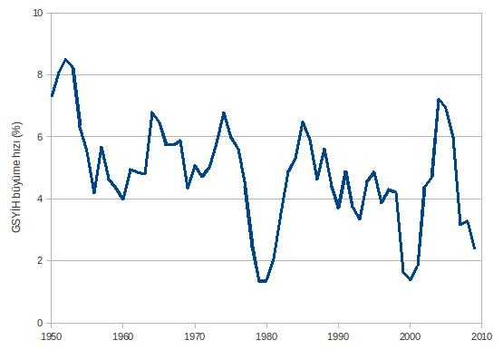
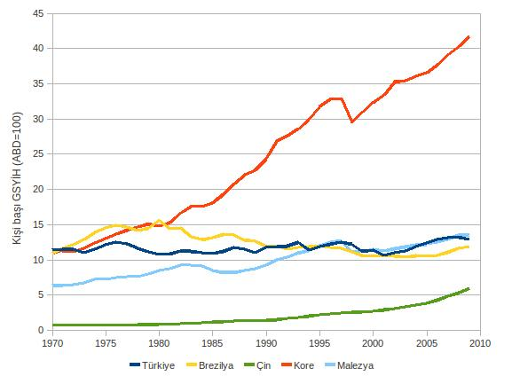
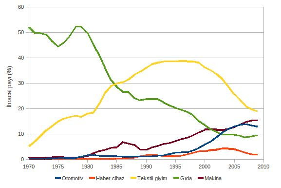
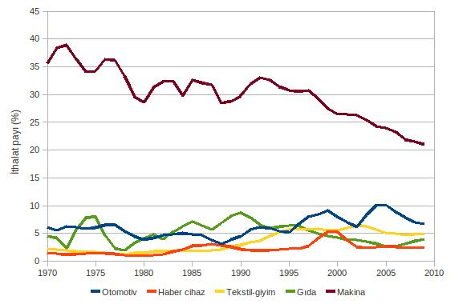
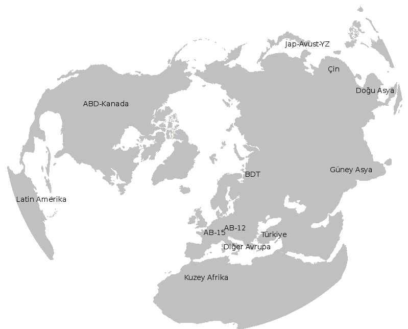

Türkiye ekonomisi 2001’de yaşanan finansal krizden sonra hızlı bir büyüme sürecine girdi. 2002-2007 yıllarında gerçekleştirilen yüksek büyüme hızları, ekonominin uzun dönemli sürdürülebilir büyümesine ilişkin tartışmaları da gündeme getirdi. Türkiye ekonomisinin uzun dönemde hızlı büyüme hızlarını koruyabilmesi, içinde yer aldığı uluslararası ekonomi ile ilişkilerine, bir başka deyişle uluslararası ekonomiye eklemlenme tarzına bağlıdır. Bu çalışmada, seçilmiş ürünler için uluslararası üretim zincirlerinde dönüşüm süreçleri analiz edilmiş ve bu zincirlerde Türkiye’nin konumu incelenerek Türkiye ekonomisinin uluslararası ekonomi ile eklemlenme tarzı ortaya konulmuştur.
Türkiye ekonomisinin yakın dönemdeki ekonomik performasını değerlendirebilmek ve uzun dönemde hızlı büyüyebilmesinin koşullarını anlayabilmek için tarihsel ve karşılaştırmalı çalışmalara gereksinim bulunmaktadır. Türkiye ekonomisinin son 60 yıllık performansının incelenmesi bu açıdan önemli bilgiler sunmaktadır.
Şekil 1. Türkiye ekonomisinde büyüme oranları,
1950-2009
(yıllık GSYİH büyüme hızları, 5-yıllık hareketli
ortalamalar)

Türkiye ekonomisinin 2. Dünya Savaşı’ndan sonraki büyüme performansı Şekil 1’de özetlenmiştir. Son 60 yıllık dönemde Türkiye’nin büyüme hızı genel olarak % 4-6 bandı arasında kalmıştır (1950-2010 ortalaması % 4.8). 1950’lerin başlarında gerçekleştirilen yüksek büyüme hızları korunamamış, 1950’lerin ortalarından itibaren büyüme hızlarında kısmı düşüşler yaşanmıştır. 1960’dan sonraki “planlı kalkınma” ve “ithal ikameci sanayileşme” dönemlerinde göreli olarak yüksek büyüme oranlarına ulaşılmış (1960-1976 ortalaması % 5.6), fakat bu dönem özellikle ödemeler dengesi sorunları ile tıkanmış ve 1979-1980 yıllarında ekonomi daralmıştır.
1980 Krizi’nden sonra ekonomi politikalarında da köklü değişikliklere gidilmiş, ekonomi hızla dışa açılmıştır. 1980’lerin başlarında, ihracat artışının da etkisi ile büyüme hızlarında bir artış gözlenmiş, fakat 1990’lı yıllarda artan kamu boç yükü ve sermaye piyasalarının liberalleşmesi ile birlikte makroekonomik istikrarsızlık artmış, büyüme hızlarında şiddetli dalgalanmalar yaşanmıştır. Artan istikrarsızlık sonucu 2001 yılında Cumhuriyet döneminin en büyük ekonomik krizi yaşanmıştır.
2001 Krizi’nden sonra ekonomi hızla toparlanmış ve yüksek büyüme hızlarına ulaşmıştır. Fakat bu yüksek büyüme hızları, Türkiye ekonomisinin son 60 yıllık performansı ile karşılaştırıldığında, büyüme döngülerinden daha farklı görünmemektedir. Bir başka deyişle, ekonomik büyüme rejiminde köklü bir dönüşüm gözlenmemektedir.
Şekil 2. Kişi başına GSYİH’nın gelişimi,
1970-2009
(2000 sabit fiyatlarıyla, dolar)

Türkiye ekonomisinin (2001-sonrası) yakın dönemdeki ekonomik performansını değerlendirebilmek için uluslararası karşılaştırma yapılması gereklidir. Bu kapsamda ABD’ye oranla Türkiye’deki kişi başına GSYİH’nin gelişimi izlenmiştir (bkz. Şekil 2). Karşılaştırma amacıyla, 1970’lerde Türkiye ile aynı konumda olan iki ülke, Brezilya ve Kore ile, iki gelişmekte olan ülke, Çin ve Malezya verileri de incelenmiştir.
Türkiye’de kişi başına GSYİH (2000 fiyatlarıyla) 1970’lerin başlarında ABD’nin yaklaşık % 11-12 düzeyindeydi. Aynı dönemde Brezilya ve Kore de benzer bir gelire sahipken, Malezya’nın geliri ABD’nin % 6’sı, Çin’in geliri ise sadece % 1’i düzeyindeydi. Bu ülkeler arasında Kore sürekli olarak yüksek bir büyüme performansı göstermiş ve göreli gelir düzeyini 40 yıl içerisinde 4 kat arttırabilmiştir. Özellikle 1980’lerden sonra çok iyi bir performans gösteren Çin, 1970-2009 döneminde göreli gelirini yaklaşık 9 kat arttırmıştır. Bu hızlı büyüme oranlarına karşın Çin’in 1970’lerdeki kişi başına GSYİH’sı çok küçük olduğu için ABD ile arasındaki büyük fark hala devam etmektedir.
Türkiye ve Brezilya benzer bir gelişme eğilimi göstermiştir. Bu iki ülke, ABD ile arasındaki farkı son 40 yıllık dönemde hiç kapatamamıştır. Tüm dönem boyunca her iki ülkede kişi başına GSYİH, ABD’nin % 10-15’i düzeyinde olmuştur. Bu durum, Türkiye’nin kısa dönemli yüksek büyüme hızlarına karşın, uzun dönemde sürekli bir büyüme performansı gerçekleştiremediğini göstermektedir.
Türkiye’nin uzun dönemde ABD ile arasındaki farkı kapatmaya yönelik bir büyüme performansı gösterememesinin pek çok nedeni bulunmaktadır. Bu nedenlerden önemli bir tanesi gittikçe dışa açılan ekonominin uluslararası ekonomi ile eklemlenme tarzıdır. Uluslararası ekonomiye eklemlenme tarzının bir göstergesi dış ticaretteki uzmanlaşma yapısı olduğu için, bu konuda genel durumu görmek amacıyla, Türkiye’nin dış ticaret yapısına bakılmıştır (bkz Şekil 3 ve 4).
Şekil 3. Türkiye’nin ihracat yapısı, 1970-2009
(3-yıllık hareketli ortalama

Şekil 4. Türkiye’nin ithalat yapısı, 1970-2009
(3-yıllık hareketli ortalama)

1970’den günümüze Türkiye’nin uluslararası ekonomiye eklemlenme tarzı, dış ticaret yapısı açısından üç döneme ayrılabilir. 1970’lerdeki ilk dönemde Türkiye’nin en önemli ihraç ürünü, büyük kısmı işlenmemiş tarımsal ürülerden oluşan gıda ve içecek ürünlerinden oluşuyordu. İthalatta ise makina ana üründü. Bu yapısıyla Türkiye tipik bir “azgelişmiş” ülke görünümündeydi. 1980’lerdeki ihracat artışının büyük ölçüde tekstil ve hazır giyime dayalı olması sonucu, 1980’lerden 1990’ların ortalarına kadar bu sektörün ihracat içindeki payı hızla artmış ve tekstil ve hazır giyim Türkiye’nin en önemli ihraç ürünü haline gelmiştir. Bu dönemde ithalatın yapısında köklü bir dönüşüm yaşanmamıştır. 1990’ların ortalarından başlayarak günümüze kadar devam eden üçüncü dönemde, ihracat içerisinde gıda ve içecek payının düşmeye devam ettiğini ve en önemli ihraç ürünü olan tekstil ve hazır giyimin payının da artık düşmeye başladığını görüyoruz. Bu ürünler yerine 1990’ların ortalarından itibaren makina, otomotiv (motorlu kara taşıtları) ve haberleşme cihazlarının payı hızla artmıştır. Haberleşme cihazları ihracatında ise en önemli ürün tüplü televizyon olmuştur. Türkiye televizyon üretiminde LCD ve plazma ekran teknolojisine zamanında geçemediği için bu sektörün ihracat payı 2000’lerin ortalarından itibaren düşmeye başlamıştır. 1990’ların ortalarından itibaren ithalatın yapısında görülen en önemli değişim makina payının azalması ve çeşitli tüketim maddeleri ve ara malların payının artmasıdır.
Dış ticaret yapısına ilişkin verileri, Türkiye’nin uluslararası ekonomi ile eklemlenme biçiminin zaman içerisinde değiştiğini, 1970’lerdeki tarımsal ürün ağırlıklı ihracat yapısından, 1980’lerde tekstil ve hazır giyim gibi emek-yoğun sektörlerde uzmanlaşıldığını, 1990’ların ortalarından itibaren ise uzmanlaşmanın orta-teknoloji olarak tanımlanabilecek makina ve otomotiv gibi ürünlere yöneldiği görülmektedir. Bu dönüşüme rağmen, uluslararası ekonomi içerisindeki göreli konumda bir iyileşme sağlanamamıştır. Bu kısmi başarısızlığın iki nedeni olabilir: Öncelikle dış ticaretde uzmanlaşılan ürünlerin dönemin katma değeri yüksek ürünleri olmaması göreli konumun değişmemesine yol açabilir. Örneğin gelişmiş ülkeler katma değeri daha yeni yüksek ürünleri geliştirir ve bu ürünlerin üretiminde uzmanlaşırken, Türkiye gibi ülkelerin teknolojisi standartlaşmış, ancak düşük maliyet temelinde rekabetçi olunabilecek ürünlerde uzmanlaşması, dış ticaret yapısında yapısal dönüşüm gerçekleşmesine karşın uluslararası ekonomideki göreli konumun değişmemesine neden olacaktır. İkinci olarak, ulusal ekonomilerin daha fazla bütünleşmesi sonucu üretim zincirlerinin farklı aşamalarının farklı ülkelere taşınabilmesi sonucu, üretilen ürünlerden çok, hangi üretim aşamalarında uzmanlaşıldığı önem kazanmaktadır. Örneğin otomotiv katma değeri yüksek bir ürün olsa da, otomotiv üretiminin farklı aşamalarının katma değer yoğunluğu farklıdır. Otomotiv ihracat payının artması, ürün veya sektörel düzeyde bakıldığında olumlu bir gelişme olarak gözünmekle birlikte, bu uzmanlaşma otomotivin düşük katma değerli üretim aşamalarında gerçekleşiyorsa, ülkenin uluslararası işbölümündeki konumu değişmeyecektir. Bu nedenle, uzun dönemli ekonomik büyüme süreci açısından uluslararası ekonomiye eklemlenme tarzının katkısının anlaşılabilmesi için, uluslararası üretim zincirlerinin ve bu üretim zincirlerinde ülkelerin aldıkları konumların değerlendirilmesi gereklidir. Bu kapsamda bu çalışmada, beş önemli ürün grubunda uluslararası üretim zincirlerinde son 15 yılda görülen dönüşüm ve Türkiye’nin konumu kapsamlı olarak incelenmiştir.
Çalışma yedi bölümden oluşmaktadır. Bu giriş bölümünden sonra, 2. Bölüm’de küresel işbölümünde son 10 yılda gözlenen değişimler (dış ticaret yapısı ve küresel sermaye hareketleri kapsamında) incelenmiştir. 3. Bölüm’de Türkiye’nin dış ticaret yapısında gözlemlenen değişimler ele alınmıştır. Bu kapsamda öncelikle 1980-sonrası dönemde makroekonomik durum ve dış ticaret politikaları değerlendirilmiş, daha sonra üretim süreçlerine göre dış ticaretteki gelişmeler kapsamlı olarak analiz edilmiştir. Çalışmanın 4. Bölümü’nde Türkiye’ye yönelik doğrudan yabancı yatırımların düzeyi ve sektörel dağılımı ele alınmıştır. 5. Bölüm’de, uluslararası üretim zincirleri tanımlanmış, seçilen üretim zincirlerinin büyüklüğü, büyümesi ve Türkiye’nin konumu incelenmiştir. 6. Bölüm’de üretim zincirlerinin küresel ölçekte dönüşümü, üretim ağları grafikleri de kullanılarak detaylı olarak analiz edilmiş, üretim zincirlerinin farklı aşamalarında yükselen ve gerileyen ülke grupları belirlenmiştir. Çalışmanın sonuçları ve Türkiye için politika seçenekleri son bölümde tartışılmıştır.
Ulaşım ve haberleşme teknolojilerindeki gelişmeler, üretim zincirlerinin parçalanmasını ve farklı parçaların daha kârlı bölgelere taşınmasını sağlamıştır. Bu süreç sonucu belirli bir nihai ürünü üretmek için gerekli üretim süreçleri farklı bölgelerde/ülkelerde gerçekleştirilmektedir. Üretim süreçlerinin dünya ölçeğinde parçalanması ve uluslararası bir nitelik kazanması, farklı kurumsal yaklaşımlar tarafından uluslararası/küresel üretim/meta/değer zinciri/ağı olarak tanımlanmaktadır.1 Bu çalışmada kullanılan yöntem üretim sürecinin farklı aşamalarında elde edilen ürünlerdeki uluslararası ticaretinin incelenmesine dayalı olduğu için, bu süreci tanımlamak için “uluslararası üretim zinciri” kavramı tercih edilmiştir.
Herhangi bir nihai malın üretim zinciri dört ana sürece ayrılabilir: hammadde üretimi, standart parça/girdi üretimi, ana parça/aksam üretimi ve nihai ürünün üretimi. Özellikle ana parça/aksam ve nihai ürün üretiminde, genellikle o ürüne özgü makina ve teçhizat kullanılmaktadır. Üretim zincirinde, hammadde ve standart parça ve girdiler, nihai ürüne özgü olmayabileceği için üretim zincirleri iç içe geçebilmektedir.
Bu çalışmada, Türkiye ekonomisi ve ihracatı açısından önemli görülen beş ürün seçilmiştir: motorlu kara taşıtları, televizyon, tekstil ve hazır giyim, gıda ve makina. Televizyon oldukça homojen bir ürünü temsil ederken, tekstil/giyim, gıda ve makina çok çeşitli ürünlerden oluşmaktadır. Üretim zincirinin farklı aşamalarını temsil eden ürünler 1992 HS sınıflamasına göre 6-hane düzeyinde tanımlanmıştır.
Motorlu kara taşıtları zincirinde nihai ürünler, otomobil, kamyon, otobüs ve traktördür. Bu üretim zincirinde ana parça/aksam motor olarak tanımlanmıştır. Standart parçalar, kara taşıtlarına özgü parçalar (lastik, amortisör, fren aksamı, radyatör, debriyaj vb) ve diğer parçalar (rulman, kasnak, dinamo, vb) olarak iki gruba ayrılmıştır. Kara taşıtlarında çok çeşitli hammadde kullanılmaktadır. Bu çalışmada motorlu kara taşıtları hammaddesi olarak sadece paslanmaz yassı çelik kullanılmıştır. Kara taşıtları imalatında kullanılan makina ve teçhizat için takım tezgahları (metal kesen: metal işleme merkezleri, torna, freze, matkap, vargel, vb; metal şekillendiren: pres, dövme tezgahı, vb) tanımlanmıştır.
Televizyon ürün grubu televizyon ve radyo nihai ürünlerindne oluşmaktadır. Bu üretim zincirinin ana parçası katot resim tüpleri (CRT) ve standart parçası elektronik bileşenlerden (kondansatör, rezistan, baskı devre, vb) oluşmaktadır. Televizyon için hammadde olarak ABS, polikarbonat ve poliamid gibi plastikler, makina ve teçhizat için plastik enjeksiyon makinaları kullanılmıştır.
Tekstil ve giyim eşyası ürünleri, önce kullanılan hammaddeye göre pamuklu, yünlü, sentetik ve diğer (ipekli, keten, vb) olarak dört gruba ayrılmıştır. Nihai ürünler, hazır giyim (takım elbise, palto, ceket, pantolon, vb), pijama/t-shirt (pijama, t-shirt, iç çamaşırı, eldiven, vb), çarşaf (çarşaf, masa örtüsü, perde, vb) ve halı (halı, kilim, vb) olarak dört alt-gruptan oluşmaktadır. Tekstil/giyim için “ana parça” dokuma/örgü kumaş, “standart parça” iplik, “hammadde” pamuk, yün, polyester vb sentetik malzemeler ve diğer hammaddeler (ipek, keten, vb) ve “makina/teçhizat” tekstil makinalarından (lif eğirme/katlama/bükme makinaları, dokuma makinaları, örgü tezgahları, yıkama/ağartma/boyama makinaları, vb) oluşmaktadır.
Gıda ürünleri zincirinde nihai gıda ürünleri (“hazır gıda”), et/balık, konserve, şekerleme, çikolata, içecekler, un ürünleri, atık ürünler ve diğer gıdalar olarak sekiz alt-gruptan oluşmaktadır. Gıda ürünlerinde ana girdi ve standart girdi arasında bir ayrıma gidilmemiştir. Gıda ürünlerinde girdiler (“işlenmiş gıda”) şeker, kakao, süt tozu, un, dondurulmuş ürünler, çay, alkol, sirke, küspe ve atıktan oluşmaktadır. Et/balık, sebze, meyve, şeker pancarı, kahve, soya, kakao (tane), mineral su, süt, buğday ve benzeri ürünler gıda ürünlerinin hammaddeleri olarak tanımlanmıştır. Makina ve teçhizat ise kurutucu, ısıtıcı, fırın, paketleme/ambalajlama makinası gibi gıda makinalarından oluşmaktadır. Bu sektörde sebze ve meyve gibi pek çok ürün hem nihai ürün, hem de hammadde olarak kullanılabilmektedir. Bu çalışmada ürünlerin işlenme düzeyleri göz önüne alınarak konserve, reçel, jöle, meyve suyu gibi ürünler “nihai ürün” (hazır gıda), meyvelerin un ve küspeleri, dondurulmuş meyveler “ara mal” (işlenmiş gıda) ve taze veya kurutulmuş meyveler “hammadde” olarak kabul edilmiştir.
Makinalar, dayanıklı tüketim malı olarak kullanılan makinalar (buzdolabı, dondurucu, bulaşık makinası, çamaşır makinası, dikiş makinası, vb) ve yatırım malı olarak kullanılan makinalar (türbinler, pompalar, santrifüjler, yangın söndürme cihazları, asansörler, konvayörler vb) iki alt-gruba ayrılmıştır. Makinalarda kullanılan “ana parça/aksam” motorlar, türbinler ve özel makina aksamlarından, standart parça yassı demir/çelik, metal profil, boru, vida, somun, perçin, yay gibi ürünlerden oluşmaktadır. Makina hammaddesi olarak demir, çelik, bakır, çinko gibi metal hammadeler kullanılmıştır. “Makina” üretiminde, kara taşıtları üretimde olduğu gibi, metal kesen ve metal şekillendiren makinalar (takım tezgahları) kullanılmaktadır.
Uluslararası üretim zincirlerindeki dönüşümüm görsel analizi için animasyonlar kullanılmıştır. Bu animasyonlarda ülkeleri/ülke gruplarını temsil eden balonların büyüklüğü, o ülkenin/ülke grubunun dünya ihracatı içindeki payı ile orantılıdır. Ülkeler arasındaki ticari ilişkiler oklar ile gösterilmiştir ve okların genişliği ihracat miktarı ile orantılıdır. Grafiklerin daha rahat görülebilmesi amacıyla 100 milyon doların altındaki ihracat akımları gösterilmemiştir. Diğer ülkelerden farklılaştırmak amacıyla Türkiye ve ticari ilişkileri kırmızı renkte gösterilmiştir.
Ticaret ağı grafikleri hazırlanırken ülkelerin dünya üzerindeki konumları göz önüne alınmıştır. Ülkelerin birbirlerine olan uzaklıklarının daha gerçekci görülebilmesi amacıyla dünyanın Kuzey Kutbu’ndan görünümü esas alınmıştır. Aşağıdaki dünya haritasında ticaret ağları grafiklerinde ülkelerin konumları gösterilmektedir.

Raporun tam metnini buradan temin edebilirsiniz (5.4 MB): Taymaz, E., Voyvoda, E. ve Yılmaz, K. (2011), Uluslararası Üretim Zincirlerinde Dönüşüm ve Türkiye’nin Konumu, İstanbul, TUSIAD-Koç Üniversitesi Ekonomik Araştırma Forumu.
Uluslararası Üretim Zincirlerinde Dönüşüm ve Türkiye’nin
Konumu Tanıtım Toplantısı Sunuşları__
(2 Mart 2012, Koç
Üniversitesi Anadolu Medeniyetleri Müzesi)
Rapor Özeti
Erol
Taymaz, Ebru Voyvoda ve Kamil Yılmaz
Rapor Üzerinde Değerlendirmeler
Şeref Saygılı
İzak Atiyas